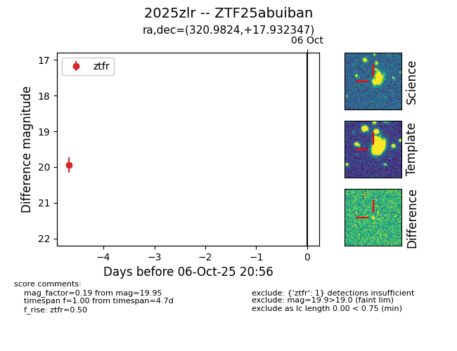

FINK: ZTF25abuiban
Lasair: ZTF25abuiban
ALeRCE: ZTF25abuiban
TNS: 2025zlr
YSE: 2025zlr
ZTF25abuiban (ztf,fink)
2025zlr (tns,yse)
equatorial (ra, dec) = (320.9824,+17.93235)
galactic (l, b) = (68.8342,-22.47927)

last ztfr=19.95
1 ztfr detections